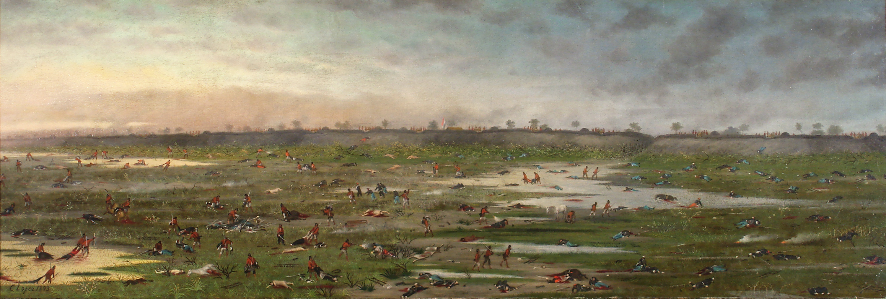

Acerca del Artista Cándido López
Con este material, nos acercaremos a la obra del artista argentino Cándido López (1840-1902). Su historia de vida, su particular concepción del dibujo y la pintura en tiempos de guerra lo convierten en un pintor que sobresale en el panorama de las artes de fines de siglo XIX en la Argentina. Las obras presentes en la colección del Museo Nacional de Bellas Artes permiten abordar los sucesos de la Guerra de la Triple Alianza (1865-1870) a través de las imágenes creadas por un artista que participó de uno de los acontecimientos más dramáticos de la historia del país. Además de quince pinturas, en el Bellas Artes se conservan tres libretas de apuntes en grafito, el libro de gastos, y manuscritos con relatos y anotaciones de Cándido López.
Cándido López representó la guerra del Paraguay (1865-1870), en la que combatió hasta su herida en Curupaytí, mediante una pintura analítico-descriptiva, derivada de la representación de batallas de la cartografía militar europea. Un modo de representación que había tenido su desarrollo en el Río de la Plata, alcanzando un punto sobresaliente en las pinturas de batallas conocidas como Victorias de Urquiza (Palacio San José, Entre Ríos) pintadas por Juan Manuel Blanes en 1857. La no profesionalización de López (fue fotógrafo, soldado, zapatero y trabajador rural) en tiempos de “artistas” lo acerca aún más al pasado de la tradición regional, cuando el “arte” era también tarea de artesanos, soldados, tipógrafos y calígrafos. Desde luego, López había adquirido una somera formación pictórica en el Buenos Aires de la década de 1850 y no había logrado concretar su deseo de perfeccionamiento, por ello la fotografía en pueblos de campaña fue una salida comercial a su no inserción artística. Sin embargo, su decisión estilística no es resultado de su nivel de aprendizaje sino de la aceptación de un modo de representación visual de la guerra, residual ya en los tiempos en que produce su obra. La elección formal permite la lectura de la guerra de la Triple Alianza como el último episodio de las guerras civiles y, a la vez, como el conflicto militar para la fijación de los límites de los Estados-nación. De este modo, su pintura es el último lazo con la tradicional regional y la primera que sirve funcionalmente al nacionalismo moderno. La idea de representar las vivencias de la guerra tuvo su origen durante la campaña, como testimonia su libreta de bosquejos, pero son factores externos, las crisis económicas de 1876 y 1890, los que parecen haber impulsado al artista a completar la tarea con intensidad. La pintura fue su herramienta de reclamo, equiparable a la acción pública de los veteranos, al pedido de los sueldos y pensiones; y por medio de ella logró incorporarse al sistema clientelista del orden conservador luego de su resonante exposición de 1885 en el Club Gimnasia y Esgrima, con el patrocinio del Centro Industrial Argentino (dos instituciones del nacionalismo finisecular). Tanto la muestra individual como su adquisición completa por el Estado son casos excepcionales en la historia del arte argentino del siglo XIX. López presentó en esta muestra 29 pinturas de un año exacto de la guerra: del 13 de agosto de 1865 al 13 de agosto de 1866.
Entre la pintura y la historia
Últimos días de la exposición temporaria "Cándido López, entre la pintura y la historia" que concluirá el próximo domingo 4 de junio.
Ir al Museo Histórico Nacional Ir al Museo de Bellas Artes